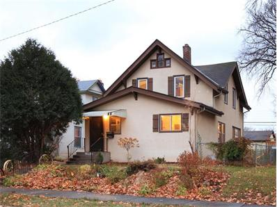

Minneapolis Standish Ericsson Neighbors Forum
The place to share announcements and discussions about community issues and life specific to our two neighborhoods.
- Join Forum (Already a member? Log in!)
 Loading the topics
Loading the topics


 Welcome to the Minneapolis Standish Ericsson Neighbors Forum
Welcome to the Minneapolis Standish Ericsson Neighbors Forum
This is a place to share announcements and discuss community issues and life specific to our Standish and Ericsson neighborhoods. This forum promotes civility through the required use of real names. Join over 1050 of your neighbors today.
While an independent forum, it serves as a friendly complement to our neighborhood association.
For specific forum rules, including details on what is and is not allowed in terms of commerce, see our detailed forum charter. No selling individual items, free items are fine. You may introduce your home-based business once here.
You may search past messages on the this forum.
Super Neighbor - This Month's Forum Sponsor
Leah Drury with Lakes Sotheby's International Realty.
 Leah lives in Standish-Ericsson and is dedicated to delivering excellence in service, regardless of price point, to sellers and buyers of residential real estate. Licensed in MN. Visit: www.LeahDrury.com
Leah invites you to check out the new local listing at 4315 Nokomis Avenue
Be Our Next Forum Sponsor
Donate now to be next month's forum sponsor. With permission, we will ALSO credit you on every e-mail post (each day this forum delivers over 5,000 e-mails) with a couple links of your choice. Donate via Addiply or contact us: sponsor@e-democracy.org